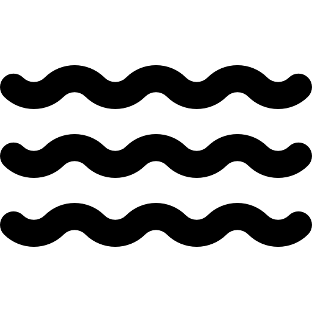

Ressonância
Usa campos magnéticos e ondas de rádio para gerar imagens detalhadas do corpo, ajudando a identificar problemas em tecidos moles, como cérebro e articulações.


A ressonância magnética (RM) e a tomografia computadorizada (TC) são exames fundamentais na medicina diagnóstica. A RM utiliza campos magnéticos e ondas de rádio para gerar imagens detalhadas de tecidos moles, como cérebro, músculos e articulações, sem emitir radiação. Por outro lado, a TC usa raios-X para criar cortes transversais precisos do corpo, sendo ideal para visualizar ossos, órgãos e detectar fraturas ou tumores. Ambas as técnicas auxiliam os profissionais de saúde a diagnosticar doenças e monitorar tratamentos com alta precisão.
Usa campos magnéticos e ondas de rádio para gerar imagens detalhadas do corpo, ajudando a identificar problemas em tecidos moles, como cérebro e articulações.
A tomografia usa raios X para criar imagens detalhadas em 2D e 3D do corpo, sendo útil na detecção de doenças, fraturas e tumores.
Ressonância
Tomografia